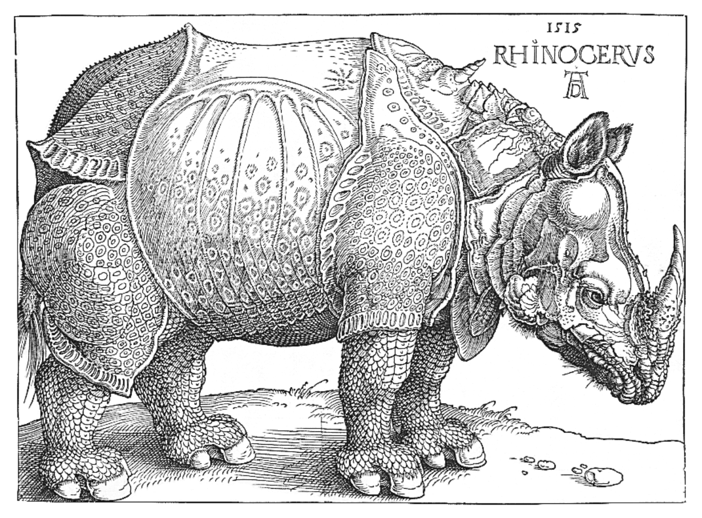

About the Author
To use Tufte CSS, copy tufte.css and the et-book directory of font files to
your project directory, then add the following to your HTML document’s head block:
 F.J. Cole, “The History of Albrecht Dürer’s Rhinoceros in
Zooological Literature,” Science, Medicine, and History: Essays on the Evolution of Scientific
Thought and Medical Practice (London, 1953), ed. E. Ashworth Underwood, 337-356. From page
71 of Edward Tufte’s Visual Explanations. But tight integration of graphics with
text is central to Tufte’s work even when those graphics are ancillary to the main body of a text. In
many of those cases, a margin figure may be most appropriate. To place figures in the margin, just wrap
an image (or whatever) in a margin note inside a p tag, as seen to the right of this
paragraph.
About this Site
Links in Tufte CSS match the body text in color and do not change on mouseover or when clicked. Here is a
dummy example that goes nowhere. These links are underlined, since this is the most
widely recognized indicator of clickable text.
Blue text, while also a widely recognizable
clickable-text indicator, is crass and distracting. Luckily, it is also rendered unnecessary by the
use of underlining.
However, because most browsers’ default underlining does not clear
descenders and is so thick and distracting, the underline effect is instead achieved using CSS trickery
involving background gradients instead of standard text-decoration. Credit goes to Adam
Schwartz for that technique.
About the Name
If you’d like to introduce your page or a section of your page with some quotes, use epigraphs. Modeled
after chapter epigraphs in Tufte’s books (particularly Beautiful Evidence), these are
blockquote elements with a bit of specialized styling. Quoted text is italicized. The
source goes in a footer element inside the blockquote. We have provided three
examples in the epigraph of this section, demonstrating shorter and longer quotes, with and without a
paragraph tag, and showing how multiple quotes within an epigraph fit together with the use of a wrapper
class.